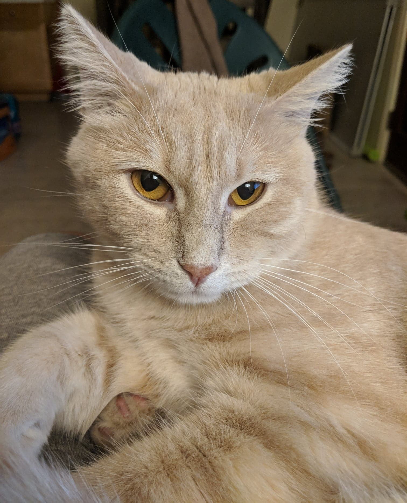

About Me
I enjoy eating, sleeping, playing games, working out and more recently spending time with my cat. It was an impulsive decision to get a cat since I have always been a dog person, but it was a decision that I am glad I made. Maybe it's just luck on my part, but my cat Ollie, is an extremely nice cat that has been easy to love. I have always thought that cats were mean before and never liked how they just run away and hide. However, Ollie loves pets and sleeping in my lap.
I have always been a PC gamer and have played a lot of different genres of game. Currently, I play Heroes of the Storm and Destiny 2. More recently, I did purchase a Nintendo Switch to play at home and that has been enjoyable.
My hobby includes playing tennis and I also coach tennis on the side. I have interests in cars but nothing too technical about the mechanical aspect of a car.